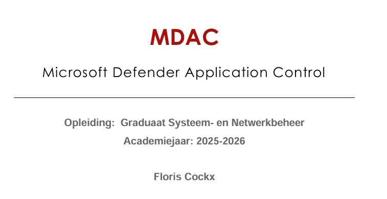

Doel
Het doel van dit project was onderzoeken hoe applicatiecontrole kan helpen om Windows-systemen beter te beveiligen.
Project 2
Voor mijn Magnum Opus onderzocht ik hoe Microsoft Defender Application Control systemen kan beschermen tegen ongewenste software en scripts.

Het doel van dit project was onderzoeken hoe applicatiecontrole kan helpen om Windows-systemen beter te beveiligen.
Ik onderzocht MDAC als beveiligingsoplossing en werkte daarnaast een praktisch experiment uit met AppLocker in een testomgeving.
Het project gaf mij meer inzicht in endpointbeveiliging, whitelisting, policies, logging en het testen van beveiligingsregels.
Mijn Magnum Opus ging over Microsoft Defender Application Control, afgekort MDAC. Dit is een beveiligingsfunctie van Microsoft waarmee je bepaalt welke applicaties en scripts uitgevoerd mogen worden op een systeem.
Omdat MDAC moeilijker te testen is in een eenvoudige lokale omgeving, werkte ik ook een experiment uit met AppLocker. Daarmee kon ik duidelijk aantonen hoe ongewenste software geblokkeerd kan worden.
Ik onderzocht hoe je systemen beter kunt beschermen door enkel goedgekeurde software toe te laten.
Een belangrijk onderdeel was het principe waarbij betrouwbare applicaties worden toegestaan en onbekende software wordt geblokkeerd.
Ik gebruikte een virtuele machine om veilig te testen zonder risico voor een echt productiesysteem.
Via Event Viewer kon ik controleren of de ingestelde regels correct werkten en of applicaties effectief geblokkeerd werden.
Ik werkte een onderzoek uit over MDAC en applicatiecontrole. Daarnaast maakte ik een praktische demonstratie waarin ik AppLocker gebruikte om ongewenste software te blokkeren.
Hiervoor gebruikte ik een virtuele machine, maakte ik beleidsregels aan en controleerde ik de werking via logging.
Ik heb geleerd hoe belangrijk applicatiecontrole is binnen een veilige IT-omgeving. Niet elke gebruiker mag zomaar software kunnen uitvoeren.
Ook heb ik geleerd dat testen, documenteren en logging zeer belangrijk zijn bij het invoeren van beveiligingsregels.
Onderzoek
Cybersecurity inzicht
Praktische uitwerking
Een uitgewerkt rapport over MDAC, de werking, voordelen en uitdagingen.
Een praktische test met AppLocker waarin een applicatie wordt geblokkeerd.
Een stappenplan waarin wordt uitgelegd hoe de configuratie werd uitgevoerd.
Een Panopto-video waarin ik mijn experiment en resultaat toelicht.
Dit project heeft mij geholpen om beter te begrijpen hoe applicatiecontrole bijdraagt aan een veilige Windows-omgeving. Ik leerde niet alleen de theorie achter MDAC, maar ook hoe je beveiligingsregels praktisch kunt testen met AppLocker.
Terug naar portfolio